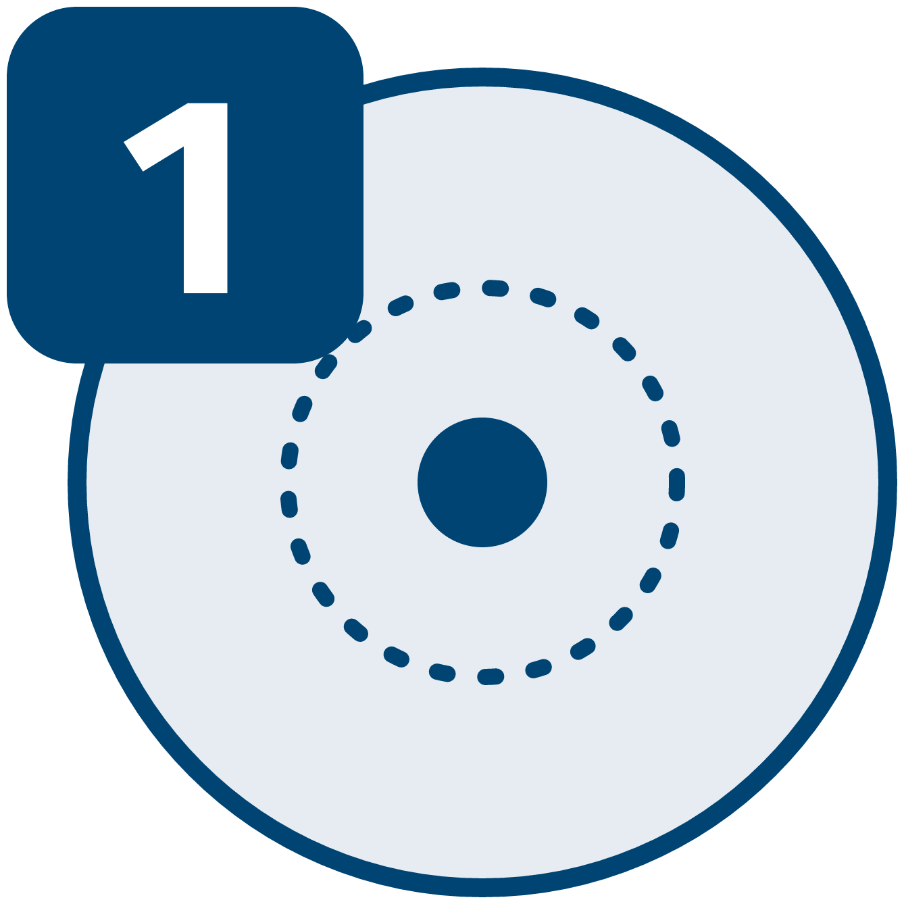
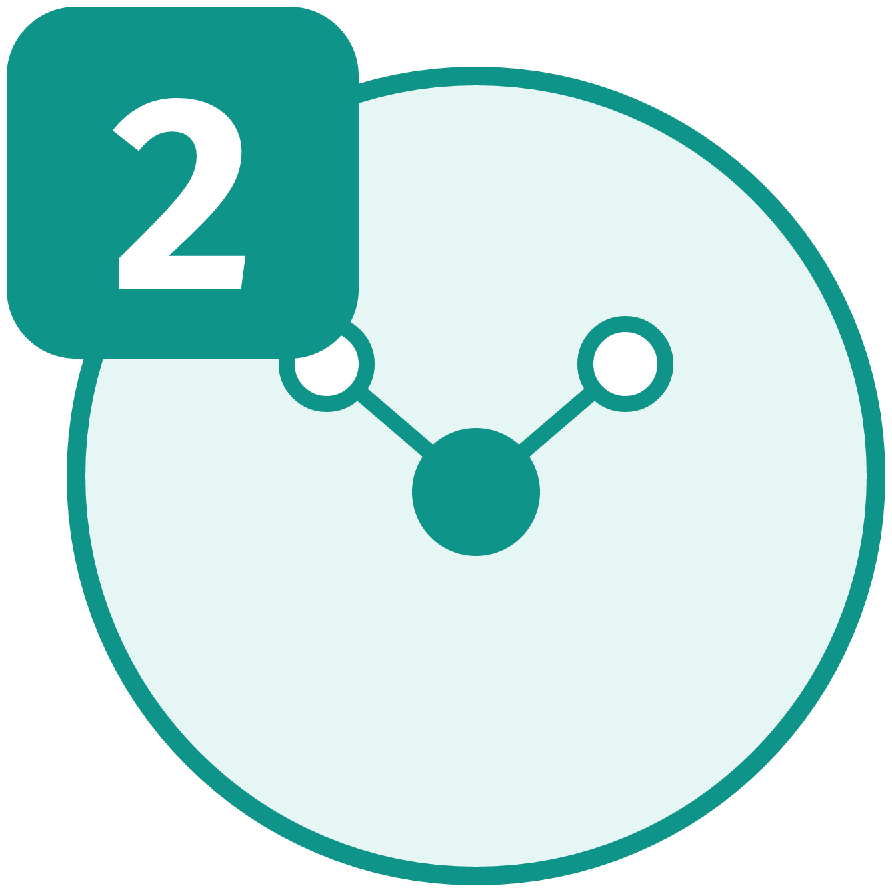
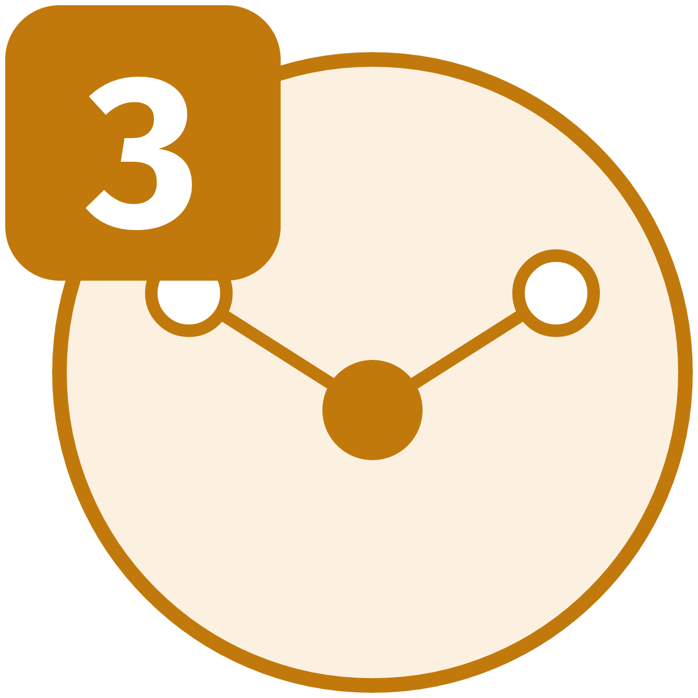
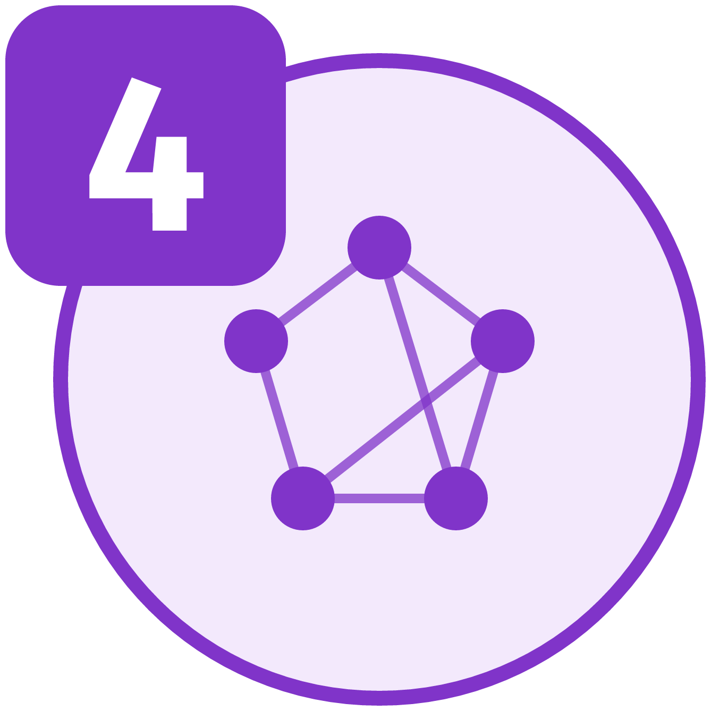
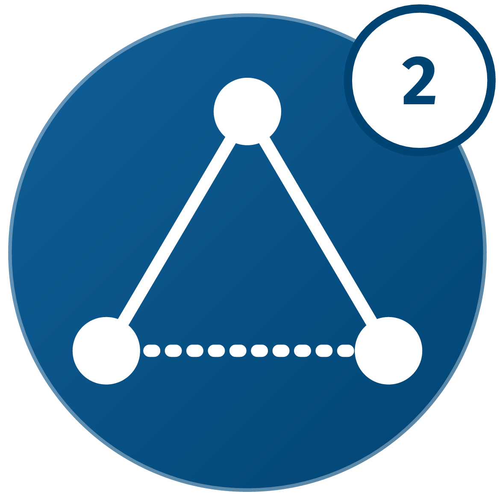
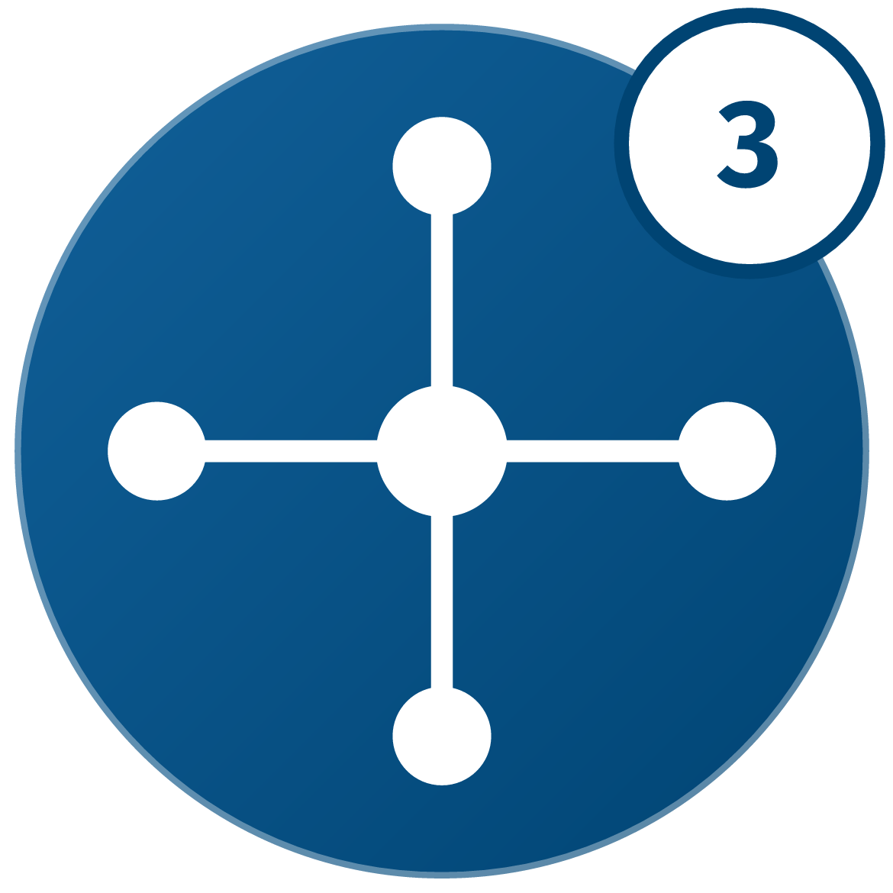
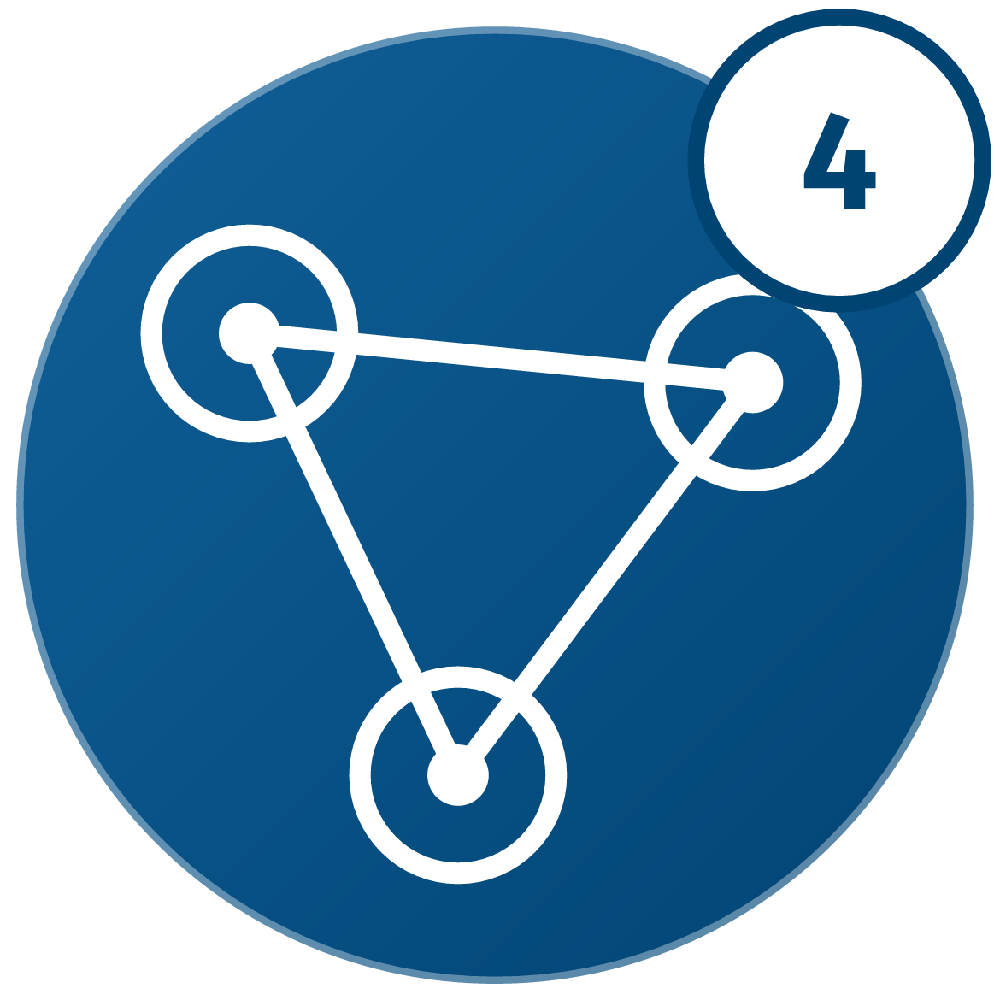

Pictograms: steps and outcomes
The eight pictograms as single files: the four steps and the four outcomes.

PI.1Pictogram for step 1: FDO encapsulation (persistent identifier, structured metadata and provenance).
FDOx-squirrel, fdox-visuals (Florian Thiery, Research Squirrel Engineers Network / LEIZA). Code: MIT licence.



PI.2Pictogram for step 2: semantic metadata and paradata modelling (acquisition, spatial anchoring, CIDOC CRM alignment).
FDOx-squirrel, fdox-visuals (Florian Thiery, Research Squirrel Engineers Network / LEIZA). Code: MIT licence.



PI.3Pictogram for step 3: linking to community hubs (Wikidata, OpenStreetMap).
FDOx-squirrel, fdox-visuals (Florian Thiery, Research Squirrel Engineers Network / LEIZA). Code: MIT licence.



PI.4Pictogram for step 4: federated knowledge graph integration across research infrastructures.
FDOx-squirrel, fdox-visuals (Florian Thiery, Research Squirrel Engineers Network / LEIZA). Code: MIT licence.


PI.5Pictogram for outcome 1: FAIR and citable.
FDOx-squirrel, fdox-visuals (Florian Thiery, Research Squirrel Engineers Network / LEIZA). Code: MIT licence.



PI.6Pictogram for outcome 2: semantically queryable.
FDOx-squirrel, fdox-visuals (Florian Thiery, Research Squirrel Engineers Network / LEIZA). Code: MIT licence.



PI.7Pictogram for outcome 3: interoperable.
FDOx-squirrel, fdox-visuals (Florian Thiery, Research Squirrel Engineers Network / LEIZA). Code: MIT licence.



PI.8Pictogram for outcome 4: integrable.
FDOx-squirrel, fdox-visuals (Florian Thiery, Research Squirrel Engineers Network / LEIZA). Code: MIT licence.